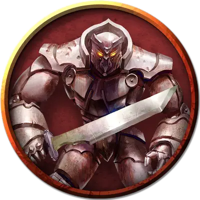

Безглавый железный голем
Headless Iron Golem
Большой Конструкт, без мировоззрения

Класс Доспеха 20 (природный доспех)
Хиты 150 (10к10 + 95)
Скорость 30 футов
| мод | спас | ||
|---|---|---|---|
| СИЛ | 24 | +7 | +7 |
| ЛОВ | 9 | −1 | −1 |
| ТЕЛ | 20 | +5 | +5 |
| мод | спас | ||
|---|---|---|---|
| ИНТ | 3 | −4 | −4 |
| МДР | 11 | +0 | +0 |
| ХАР | 1 | −5 | −5 |
Иммунитет к урону огонь, психическая энергия, яд; дробящий, колющий, рубящий от немагических атак, кроме нанесённых адамантиновым оружием
Иммунитет к состояниям паралич, очарование, отравление, окаменение, истощение, испуг
Чувства тёмное зрение 120 футов, пассивное Восприятие 10
Языки понимает языки своего создателя, но не говорит
Опасность 10 (5900 опыта)
Бонус мастерства +4
Особенности
Поглощение огня. Каждый раз, когда голем должен получить урон огнём, он не получает урон, и вместо этого восстанавливает число хитов, равное причиняемому урону огнём.
Неизменяемый облик. Голем обладает иммунитетом ко всем заклинаниям и эффектам, изменяющим его облик.
Сопротивление магии. Голем совершает с преимуществом спасброски от заклинаний и прочих магических эффектов.
Магическое оружие. Атаки оружием голема являются магическими.
Безглавый. Голем ослеплён и глух, из за чего получает помеху на броски атаки и не может использовать Ядовитое дыхание
Действия
Мультиатака. Голем совершает две рукопашные атаки.
Размашистый удар. Рукопашная атака оружием: +13 к попаданию, досягаемость 5 футов, одна цель. Попадание: Дробящий урон 20 (3к8 + 7).
Меч. Рукопашная атака оружием: +13 к попаданию, досягаемость 10 футов, одна цель. Попадание: Рубящий урон 23 (3к10 + 7).
Описание
Железный голем — сильнейший из големов, массивный высокий великан из тяжелого металла. Форма железного голема может быть любой, но большинство сделано в виде огромных живых доспехов. Его кулаки могут убить существо одним ударом, а его лязгающая походка сотрясает землю под ногами. Железные големы носят огромные мечи для увеличения досягаемости и могут изрыгать облака смертельного яда.
Тело железного голема выплавлено с добавлением редких примесей и добавок. Другие големы имеют уязвимость, заключающуюся в их материале или силе стихийного духа, связанного с ним, а железные големы были созданы быть практически неуязвимыми. Их металлические тела лишают свободы управляющих духов, и они восприимчивы только к оружию, наполненному магией или силой адамантина.